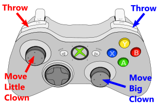

This Game Was Designed By A 9-Year-Old
Finn (9), the mastermind behind this game
This is Finn. Finn is nine years old, and I'm his godfather. As a godfather, I think my job is to make sure that Finn's childhood is cool. That he gets to experience all the things I loved as a kid, and also those I would have loved but didn't get. I gave him his first Lego set, and I passed my old SNES on to him. I also try to get him interested in science and generally keep his curiosity alive the best I can. Thankfully, his parents are doing an awesome job at that, too.
This Christmas, Finn was finally old enough to understand that I work as a game developer. I guess it's because he started playing Minecraft a couple months before. He asked me a lot of questions about how games are made, and what exactly it is that I do, and I tried to explain everything the best I could.
Finally he paused, considering if he needed any more information. Then he looked up, smiling, and said, "I have an idea for a game. Can you tell your colleagues about it and build it?" I smiled, and said, "Sure, let's hear it!". I expected it to be some kind of Minecraft clone, since that was all he knew about video games. I was so wrong. Never understimate the imagination of a child.
He ran off and came back with a piece of paper and a pencil, and started drawing and explaining his design at the same time. It was a game for two players. Each player controls one clown, and they juggle a ball between them. The better they juggle it, the stronger it becomes: First it grows spikes, then it gets swords attached to it. Together they fight the snake. The snake consists of a head and thirteen body segments. When the clowns destroy a segment in the middle of the snake, it splits into two snakes that move independently.
{kind=link}
The Game Design Document
When I reminded him that this might be a little hard, he said, "The harder it is, the more fun it will be!". I smiled proudly. At least he gave the clowns five lives each. He also added a tube from which little creeps would randomly spawn into the arena, and when you kill them, you have a chance of finding a super weapon that can kill the snake with one hit.
When he was done, he asked me all kinds of legal questions. "When you sell it, will I get some of the money? Will my name be on it? Will my friends be able to play it?" He was negotiating a publishing contract with me. I decided to be honest with him, so I told him that our company probably wouldn't make this kind of game. Instead I told him about the Global Game Jam in January and promised him to make his game there.
At the Jam, people were enthusiastic about this project. I found an amazing team to work with. And it was the easiest and most rewarding game jam I've ever been to. Whenever we got stuck with the design or art style, we considered the holy scroll that had been given to us by our Lord and Saviour, Finn. Whenever it was unclear, we tried to interpret his divine will, and asked ourselves, What Would Finn Do? There was never any argument in the team because we had such a strong vision statement, literally in front of our eyes (we taped it to the wall).
We still made changes to the original design: We left out the tube of creeps and the super weapon. Both because of time contraints and because we all felt that it would make the game harder to understand and take away from its clean, strong core. Apart from that, we stayed true to the original design. We even traced Finn's handwriting for the title screen. Of course, we put his name there for everyone to see.
The day after, his parents showed Finn the gameplay video and he was absolutely mind-blown. He told all his friends at school and was the proudest kid in the world. The look on his face when he played it with his father was priceless. Unfortunately, I couldn't be there because I live 800km away.
On the Easter weekend, I went to see him again. He wanted to know all about how we made the game. I had my notebook with me, so I started up Unity and showed him how it worked. Then I said, "Is there anything you would want to add to the game?" Of course there was. We tinkered and hacked for about four hours. Now it has spiked walls and lava pits, and a total of seven levels, each harder than the last. Finn drew the images for the spikes, and closely supervised me when I made the coder art lava pits. The game is now officially approved by its creator.
How To Play
Keyboard:
Little Clown: WASD + Space
Big Clown: IJKL + Ctrl